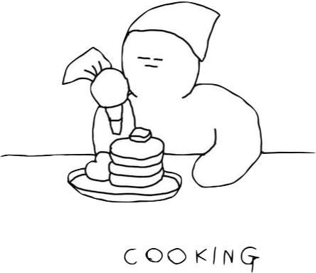

|  | |||
Nutrition Facts |
|||
| Calories {{calories | kcal}} | Fat {{fat | g }} | Carbs {{carbs | g}} | Protein {{protein | g}} |
| Foodbag item | Serving size(g) | Calories (kcal) | % Daily Calorie Value |
| {{food["food"]}} | × {{food["servings"]}}g | {{food["calories"] | kcal}} | {{(food["calories"] / calories) | percentage }} |
| nothing in your food bag ! | |||
| A nutrition snapshot of your current food bag ! | |||